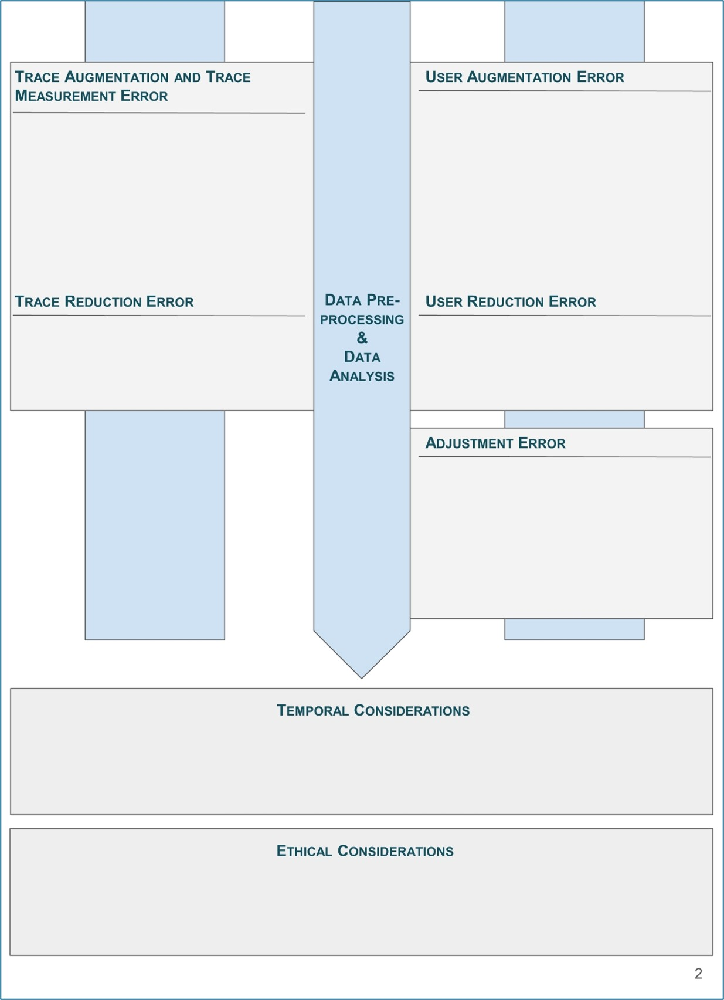

Total Error Sheets for Datasets (TES-D)
1. Introduction
The Total Error Sheets for Datasets (TES-D) are a template-based approach for documenting datasets collected from online platforms. For the TES-D, we have developed a catalog of questions that dataset creators are supposed to answer after collecting and before sharing their datasets, guiding them through a critical reflection on the data collection process and the resulting dataset. Ideally, the resulting documentation sheet should be shared together with the data, allowing potential re-users of the dataset to assess whether the contents and characteristics of the dataset are suitable for their own research purpose.
The datasets we had in mind when creating the Total Error Sheets for Datasets are those typically used in Computational Social Science (CSS) and related disciplines, in which researchers increasingly turn towards studying the “digital traces” people leave behind when using online platforms. Platforms from which researchers frequently collect digital traces to use them as Digital Behavioral Data (DBD) include (social) media platforms like X (Twitter), YouTube or Wikipedia, but also shopping portals, search engines, online maps and many more.
The variety of data types and the sizes of the datasets available from these platforms offer great opportunities for meaningful insights into opinions, communication practices and other forms of human behavior. At the same time, the fact that DBD is “found” rather than designed for a specific research purpose introduces a number of challenges for ensuring good data quality. For instance, researchers must often find their own ways to collect data from platforms (which often appear as “black boxes”, opaque in their exact functioning), resulting in a host of design decisions made when collecting and processing these digital traces, which in turn have a direct influence on the characteristics and quality of the resulting datasets. Since most researchers use their very own setups and pipelines for collecting and processing the data and since the online platform environments tend to change over time (new tools, new versions of access rights and restrictions), a need for careful inspection and documentation of the data curation processes and the resulting datasets arises.
TES-D was built by combining two approaches popular in very different disciplines. From Machine Learning (ML) and Natural Language Processing (NLP), we borrowed the only recently established practice to carefully examine and document the datasets used for method development and research (Gebru et al. 2021; Bender and Friedman 2018). From the social sciences, we took the idea of using error frameworks to systematize the research process as well as the notion of (cumulative) errors (Groves et al. 2011). More specifically, we use the TED-On (Sen et al. 2021) to structure our documentation template and to inspire many of its question.
With TES-D, we aim to offer an easy-to-use, hands-on tool that facilitates the systematic documentation of online platform datasets and, by inspiring critical reflection on data collection practices, contributes to higher data quality standards. Through an interdisciplinary approach and an effort to unify competing terminologies, we hope to make TES-D accessible to researchers from different disciplines, unified by their interest in working with DBD.
2. TES-D Tool
In essence, TES-D is a catalog of questions that researchers collecting online platform datasets should critically reflect on and answer during the creation of their datasets. To facilitate the documentation of datasets using TES-D, we provide three different formats:
A diagram-based template. The template is designed to better structure the documentation process and offers spaces for the user’s notes on the different errors.
A set of questions. The questions should be answered by dataset creators to document their data collection.
A manual. The manual provides context, details and justification for the questions.
Further information on the motivation behind creating TES-D as well as the development process are available from the paper. The paper also provides the full versions of all materials.


3. Application and use case
We provide an example of how TES-D may be used to critically reflect upon the dataset creation process and result in a dataset documentation sheet by applying it to the “Call me sexist, but..” dataset. Samory et al. (2021) created this dataset to evaluate the reliability of common machine learning models in detecting different types of sexism found online.
In their work, Samory et al. (2021) are very carefully to ground the different dimensions of sexism in psychological scales and derive a codebook for sexism in social media from that foundation. Apart from the variety of defined and operationalized types of sexism collected in their dataset, the authors further include adversarial examples - versions of sexist examples that with minimal lexical changes have been turned non-sexist. The final dataset ultimately combines examples for sexism “in the wild” collected by the authors from the social media platform Twitter, annotations as well as adversarial examples provided by crowdworkers, psychological scales developed to measure sexism as well as examples for different types of sexism extracted from other research datasets. It thereby displays a whole range of interwoven and innovative components that are so typical for research with digital behavioral data.
While the authors go to great length to describe the individual collection and processing steps as well as to provide reasoning for the decisions taken in creating the dataset throughout their paper, a researcher considering to re-use the dataset for their own purpose could still struggle to identify the relevant pieces of information to assess its suitability and understand its overall quality. It is at this point where TES-D comes in, offering the dataset creators an additional resource to systematically reflect upon and share any critical decisions and steps taken in preparing the dataset.
In the following sections, we will introduce the different stages of the research process covered by TES-D and discuss the answers to some of the relevant questions, always using the “Call me sexist, but..” dataset as our case study.
General Characteristics
This section should provide the reader with an overview of the dataset, including its contents, access details, and the motivation for its creation. While the general characteristics do not contribute to the error-focus of the rest of the TES-D approach, they are necessary to make the documentation comprehensive and independent of additional resources.
TES-D starts by establishing a level of transparency, accountability and responsibility in the dataset creation process, asking about the identities of the creators. To ensure reusability, further questions concern the hosting and licensing status of the dataset, before asking about the general contents and size of the dataset. Prominently featured in the first section are also questions regarding the reproducibility of the data collection, potential ethical concerns as well as risks of using the data.
For the “Call me sexist, but..” dataset, one important aspect to properly document is its composition, given that instances are combined from different sources and augmented using adversarial examples. The TES-D therefore lists the number of instances and adversarial examples coming from each source. Another critical question in this section regards ethical considerations. While no ethics review process had been conducted, the fact that the dataset creators took care to fairly compensate and debrief crowdworkers may still be highlighted. The TES-D also communicates that out of ethical considerations the adversarial augmentations were restricted to turning sexist instances into non-sexist instances, not vice-versa.
Construct Definition
The construct is the essence of what data-based research is interested in measuring. Without a clear and precise definition of the construct, any potential operationalization based on the available data will suffer from a lack of validity. Validity is concerned with demonstrating that measures obtained for a specific construct are both meaningful and useful. The careful design of a suitable construct is especially crucial before using digital behavioral datasets, as the connection of digital traces to concepts relevant to research must often be established first.
Even if the dataset was not collected with a specific construct or purpose in mind, many questions in this section might not apply and may be skipped. However, we would encourage dataset creators not to dismiss this section altogether, as datasets are always part of a broader research landscape and might, if not by the original creators of the dataset, still be used for measuring a specific construct at a later stage.
With a strong focus on validity, the questions in this section first establish the construct of interest by asking about its exact definition and operationalization. Ideally, the dataset creators should be able to clearly differentiate their construct from related constructs. Given the frequent mismatch between dataset and target populations in research with digital behavioral data, further questions in this section inquire about the (sub)populations present in the dataset and those considered to be the target populations.
The Construct Definition section of the TES-D for the “Call me sexist, but..” dataset starts with a detailed explanation of the dataset creators’ research objectives. Part of what makes the dataset unique is its theory-informed taxonomy of types of sexism and the attention on not just the contents but also the phrasing of the instances. The TES-D lists both these aspects, before explaining the operationalization of sexism through the coding scheme which was then used by crowdworkers to generate the dataset labels. Even though the dataset creators do not explicitly define a target population in their work, the corresponding question may still be answered by their focus on “sexism in social media”, making the English-speaking platform (in this case Twitter) users the target population.
Platform Selection
The selection of a platform determines what traces can be collected by the dataset creator(s). The platform’s available traces should align with the construct definition and operationalization. The ways in which the characteristics of the platform shape and influence the user behavior and in consequence the traces in the dataset should be examined and documented (Platform Affordances Error). In addition, different platforms attract different types of users, bringing with them their own conventions and behaviors (Platform Coverage Error). Recent years have shown that the popularity and user experience of platforms may rather rapidly change, prompting whole groups of users to move from one platform to another.
Questions in this section are all about capturing the essence of the platform at the time of the dataset collection as accurately as possible and in as much detail as necessary. Some of the relevant aspects include the key (technical) characteristics of the platform, the terms of service and their implications on platform interactions, as well as the sociocultural norms governing user behavior.
The TES-D for the “Call me sexist, but..” dataset makes an effort to cover as many of the platform characteristics at the time of data collection as possible. For example, back when the original dataset was created, there still was a limit of 280 characters for posts on Twitter. An important aspect with regard to the construct of interest is the fact that the terms of service listed “sexist tropes” as a reason for a tweet’s potential removal, thus making the availability of instances relevant for the dataset dependent on the efficiency and efficacy of the platform’s moderation practices. For any platform data collection, the question how exactly the data is made accessible by the platform (and oftentimes more importantly how it is restricted) is crucial for the size and shape of the resulting dataset. In case of the “Call me sexist, but..” dataset, the Twitter API was still openly available for researchers, allowing the dataset creators to retrospectively collect tweets via keywords or keyphrases. In theory, this allows researchers to collect all tweets containing the given word or phrases. In practice, however, tweets that had been removed either by the platform or by the user before they could be collected for the dataset would be missing.
Data Collection
Within the constraints of data availability and technical limitations of the access offered by platforms, dataset collectors need to decide how to select traces and user information relevant for their study. The dataset creator has to calibrate the collection process so that all traces that contribute to the measurement of the construct and all users that are part of the target population are collected, without including traces and users that are irrelevant to the construct and target population.
Depending on the chosen operationalization of the construct of interest, relevant traces for its calculation need to be collected. When collecting these traces, every detail of the collection process potentially influences the composition of the resulting dataset. However, not only the deliberate decisions of dataset collectors are relevant, but also the amount and type of traces made available from the platform. While the traces available for collection often present only a subset of the total traces in existence, in most circumstances, not all available traces can be collected, stored, and processed. The omission of relevant traces or the inclusion of irrelevant traces is called Trace Selection Error.
While the Trace Selection Error is concerned with the systematic in- and exclusion of traces, the User Selection Error looks at users that are systematically omitted or included. It often builds directly on Trace Selection Error, especially if users are not explicitly collected but included as a consequence of the collected traces.
The questions on the actual collection of the data are all about the (technical) details of the collection process, trying to surface any instances or information that might have been missed. Other important questions ask about the possible inclusion of sensitive, confidential or minor-related data and the consent of users to the data collection.
In the TES-D, the rationale behind the used keyphrase “Call me sexist, but..” is laid out, oftentimes observed to practically serve as a disclaimer for sexist opinion following it. For the “Call me sexist, but..” dataset, the creators implemented a number of steps to ensure the anonymity of Twitter users whose tweets were collected. Usernames were replaced with placeholder-tokens, and mentions of family names in the text were detected using regular expressions and a NER model before being abbreviated to only the initial letter.
Data Preprocessing and Data Analysis
Both data preprocessing and data analysis steps typically have the same objective of enriching the data with information such as additional labels or alternative representations.
Datasets that not only capture instances and their characteristics but also augment those mere observations with associated labels representing some form of additional knowledge on these instances are a valuable resource in CSS research. While the original idea of these datasets has been to collect reliably true values only, it is increasingly common to approximate these true values via crowdworkers or computational models explicitly trained for the task. The errors and uncertainties regarding data quality introduced through these steps are called Trace Augmentation Error and Trace Measurement Error. Any errors made by automated methods or manual processes to infer characteristics and attributes of individuals are called User Augmentation Error.
On the other hand, to avoid the inclusion of traces irrelevant to the purpose of the data collection, filters and heuristics may be used to remove such traces from the dataset. Irrelevant traces could be traces identified as spam or traces in a language or format not covered by the purpose of data collection. Similarly, users associated with inauthentic behavior (e.g., trolling or automation) are frequently considered irrelevant for the purpose of data collection and therefore filtered out. Errors made in filtering out irrelevant traces and users are called Trace Reduction Error and User Reduction Error, respectively.
The questions in this section focus on the different way for augmenting datasets. They ask for details of the automated methods or human annotations used to label the dataset as well as for information on any steps taken to validate these labels. Questions about the inference of personal attributes and characteristics, the identification risks for individuals included in the collection, and the danger of reinforcing social inequality through the design of the dataset raise awareness for misuse and harm scenarios of datasets.
In the “Call me sexist, but..” dataset, getting the right annotations of the collected instances for the construct of sexism is crucial. The TES-D for this dataset therefore explains in detail the process of recruiting and training the crowdworkers serving as annotators, further documenting the remuneration of the workers. Crowdworkers had to be located in the US and have large experience on the annotation platform (MTurk), combined with a past approval rate of their work above 99%. In the final qualification test, they had to correctly annotate four out of five examples. Regarding the validation of the resulting labels, the TES-D documents the aggregation of individual annotations into a final via majority vote and the use of Randolph’s Kappa and majority agreement for verification of the annotator consistency. TES-D finally offers a discussion of potential misuse scenarios, raising awareness of the danger that malicious actors could use the sexist instances in the dataset to further spread them directly or to train models to artificially generate similar harmful content.
4. Discussion
As demonstrated above, the TES-D helps to structure and inspire a critical reflection on the dataset creation process, beginning with the definition of the construct all the way to the end when analysis results are produced. A key challenge for the development of TES-D is the heterogeneity of digital behavioral data collected from online platforms. While the variety of digital data available offers great opportunities for research, it simultaneously makes it harder to cover and assess all its different aspects that relate to data quality. We tried to account for this challenge by keeping both the questions themselves and the overall format of TES-D flexible - if questions are not applicable to their data collection, dataset creators are encouraged to skip them.
Another aspect that makes the important data documentation work tedious at times is the rather high level of abstraction. While some of the questions of the TES-D are directly measurable and straightforward to report, the majority of questions requires a more profound reflection not just on the immediate contents and characteristics of the dataset, but also on its situation in the broader research landscape. TES-D therefore not just serves to document the technicalities of datasets, but also the current ethical and legal context in which they exist. Mainly for those questions that directly correspond to actual programming work for data collection and processing, we developed a Workflow-Integrated Data Documentation tool (WIDD), that lowers some of the barriers of documentation by integrating the catalog of relevant questions directly into the Jupyter programming environment.
Making documentation approaches as accessible as possible is crucial for their impact, as these types of self-assessment tools depend on the willingness of the dataset creators to actively and honestly engage with them. One possibility to further increase that engagement would be the introduction of a score-system, resulting in an overall data quality score for the documented dataset in the end. Apart from raising awareness for data quality by featuring it more prominently, such a score would be useful for researchers that already follow best practices and high standard to more easily display their efforts to the community. An additional benefit would be that re-users of dataset (or reviewers of publications) would have a strong signal for judging the quality of the dataset at a glance.